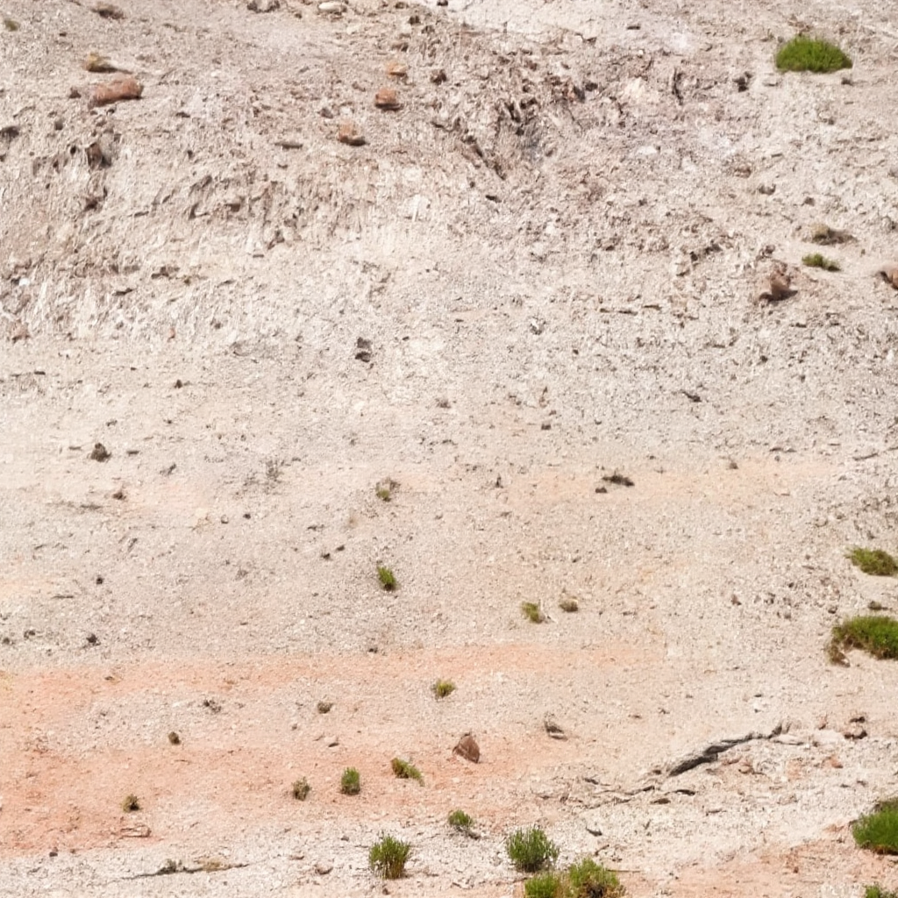
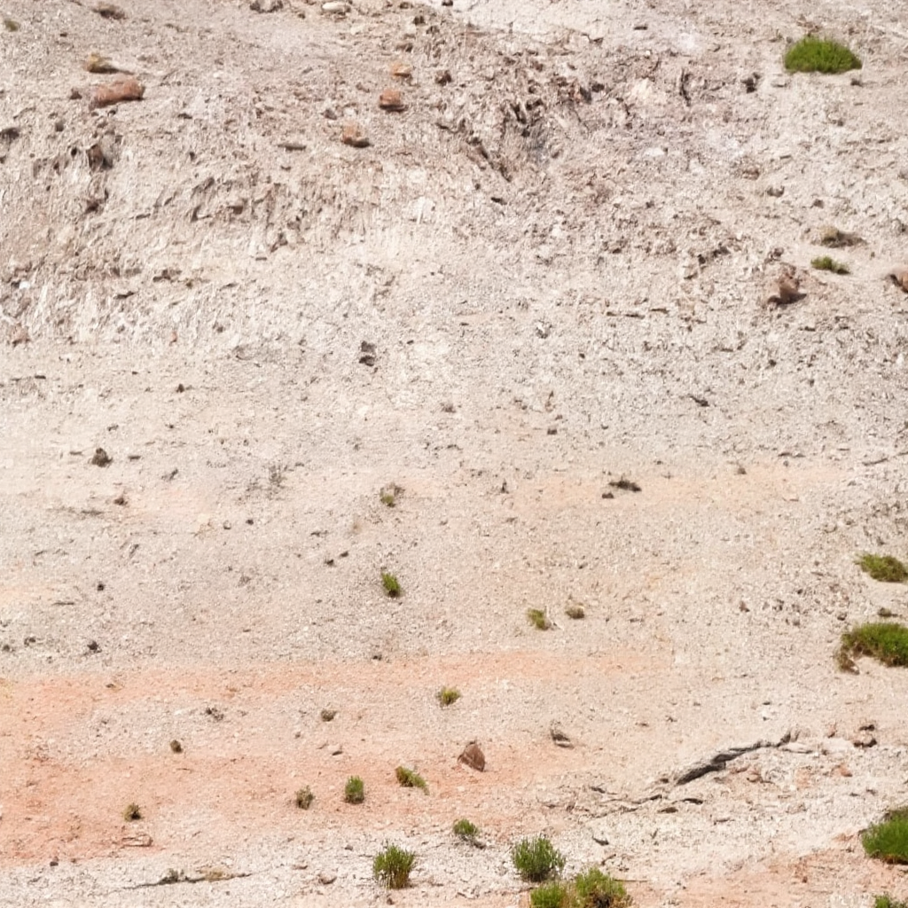

OmniEraser: Remove Objects and Their Effects in Images with Paired Video-Frame Data
Seamlessly remove objects and their visual effects with innovative paired video-frame data-based solutions.
Seamlessly remove objects and their visual effects with innovative paired video-frame data-based solutions.
Inpainting algorithms have achieved remarkable progress in removing objects from images, yet still face two challenges: 1) struggle to handle the object's visual effects such as shadow and reflection; 2) easily generate shape-like artifacts and unintended content. In this paper, we propose Video4Removal, a large-scale dataset comprising over 100,000 high-quality samples with realistic object shadows and reflections. By constructing object-background pairs from video frames with off-the-shelf vision models, the labor costs of data acquisition can be significantly reduced. To avoid generating shape-like artifacts and unintended content, we propose Object-Background Guidance, an elaborated paradigm that takes both the foreground object and background images. It can guide the diffusion process to harness richer contextual information. Based on the above two designs, we present OmniEraser, a novel method that seamlessly removes objects and their visual effects using only object masks as input. Extensive experiments show that OmniEraser significantly outperforms previous methods, particularly in complex in-the-wild scenes. And it also exhibits a strong generalization ability in anime-style images. Datasets, models, and codes will be published.
Press any image to see the transformation.

 

We introduce Video4Removal, a new photorealistic dataset for object removal, containing over 10,000 image pairs derived from real-world video recordings.
We introduce a new benchmark RemovalBench, which contains 70 pairs of carefully crafted object and ground-truth examples.
@article{wei2025omnieraserremoveobjectseffects,
title={OmniEraser: Remove Objects and Their Effects in Images with Paired Video-Frame Data},
author={Runpu Wei and Zijin Yin and Shuo Zhang and Lanxiang Zhou and Xueyi Wang and Chao Ban and Tianwei Cao and Hao Sun and Zhongjiang He and Kongming Liang and Zhanyu Ma},
journal={arXiv preprint arXiv:2501.07397},
year={2025},
url={https://arxiv.org/abs/2501.07397},
}